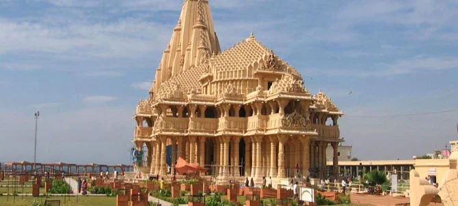
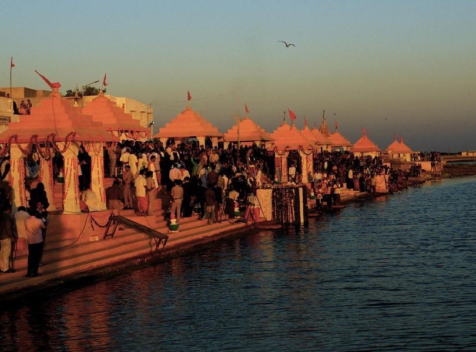
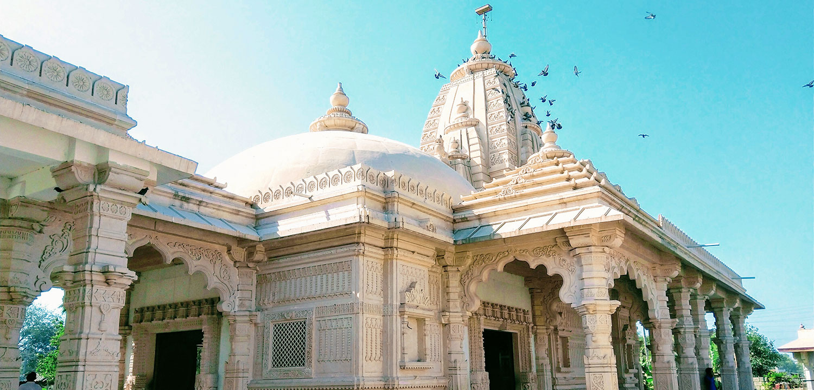
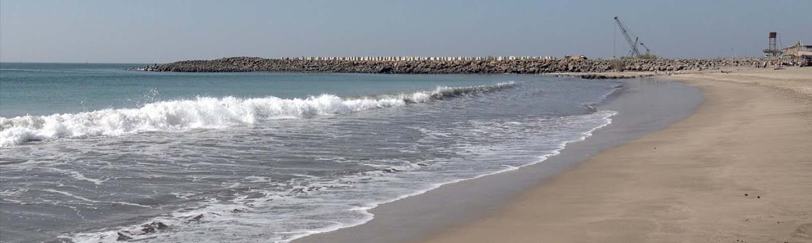

Somnath Temple: The Eternal Light
Somnath Temple is one of the twelve Jyotirlingas and a significant pilgrimage site in India.
Fun Fact:
~It has been rebuilt several times after being destroyed by invaders!
Things to Explore at Somnath Temple:
-
The Main Shrine:
Marvel at the intricate architecture and spiritual ambiance of the temple!
-
The Beach:
Enjoy the serene beach located near the temple!
-
The Light and Sound Show:
Experience the captivating light and sound show that narrates the history of the temple!
-
The Museum:
Visit the museum that showcases artifacts related to the temple’s history!
-
The Evening Aarti:
Attend the evening aarti for a spiritual experience!
Why Visit Somnath Temple?
!Because it’s a place of immense spiritual significance and architectural beauty!

Triveni Ghat: A Spiritual Confluence
Triveni Ghat is a sacred bathing ghat located near the Somnath Temple, where pilgrims perform rituals and take holy dips.
Fun Fact:
~It is believed to be the confluence of three sacred rivers: Ganga, Yamuna, and Saraswati!
Things to Explore at Triveni Ghat:
-
The Rituals:
Participate in the rituals and ceremonies performed by pilgrims!
-
The Scenic Beauty:
Enjoy the serene beauty of the ghat and its surroundings!
-
The Evening Aarti:
Witness the mesmerizing evening aarti performed at the ghat!
-
The Local Culture:
Experience the local culture and traditions associated with the ghat!
-
The Spiritual Experience:
Feel the spiritual energy and tranquility of the sacred site!
Why Visit Triveni Ghat?
!Because it’s a place of spiritual significance where you can connect with the divine!

Bhalka Tirth: The Sacred Spot
Bhalka Tirth is a sacred site where Lord Krishna is believed to have been accidentally shot by an arrow.
Fun Fact:
~It is a significant pilgrimage site for devotees of Lord Krishna!
Things to Explore at Bhalka Tirth:
-
The Temple:
Visit the temple dedicated to Lord Krishna and offer your prayers!
-
The Sacred Lake:
Take a dip in the sacred lake associated with the legend of Lord Krishna!
-
The Peaceful Atmosphere:
Experience the serene and peaceful atmosphere of the site!
-
The Historical Significance:
Learn about the historical significance and legends associated with Bhalka Tirth!
-
The Pilgrim Services:
Utilize the services provided for pilgrims visiting the site!
Why Visit Bhalka Tirth?
!Because it’s a place of immense spiritual significance and a must-visit for devotees of Lord Krishna!

Somnath Beach: A Coastal Retreat
Somnath Beach is a beautiful beach located near the Somnath Temple, offering a perfect blend of spirituality and natural beauty.
Fun Fact:
~It’s a great spot for relaxation and enjoying the coastal scenery!
Things to Explore at Somnath Beach:
-
The Scenic Views:
Enjoy breathtaking views of the Arabian Sea and the coastline!
-
The Water Activities:
Engage in various water activities like swimming and beach sports!
-
The Sunset Views:
Witness stunning sunsets that paint the sky in vibrant colors!
-
The Local Cuisine:
Savor delicious local seafood and snacks available at beach shacks!
-
The Relaxation Spots:
Relax at designated spots along the beach and enjoy the soothing sound of waves!
Why Visit Somnath Beach?
!Because it’s a perfect place to unwind and enjoy the natural beauty of the coastal area!